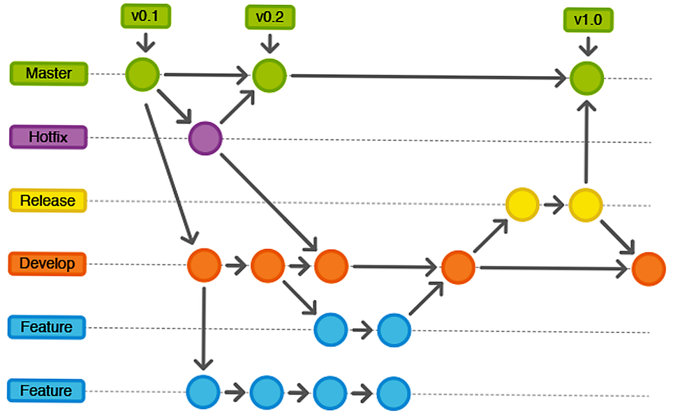

Полезная информация
Общие сведения о Гите
Основной смысл -- контроль версий текущего проекта, в нашем случае документов по проекту. Хранение сведений по проекту и истории их изменений осуществляете в репозитории. (Фактически, репозиторий представляет собой папки на диске)
Каждая точка сохранения вашего проекта носит название коммит (commit). У каждого commit-a есть hash (уникальный id) и комментарий. Из таких commit-ов собирается ветка. Ветка (branch) - это история изменений. У каждой ветки есть свое название. Репозиторий может содержать в себе несколько веток, которые создаются из других веток или вливаются в них.
Например, у нас есть 3 коммита: С1, С2 и С3. Выглядеть они будут вот так:
С1 -> С2 -> С3
Все эти commit находятся в ветке под названием main. Это основная ветка, чаще всего ее называют master. Это пример самого простого графа, состоящего из одной ветки и 4х коммитов.
Веток может быть много, коммиты могут идти параллельно, и структура может быть сложной, например:

Git - это программа, которую нужно установить и подключить к проекту для управления системой контроля версий.
В Git хранятся все версии проекта - они называются коммитами. Разработчик получает свою версию кода, вносит в неё изменения и отправляет обратно. Коммиты разных разработчиков объединяются - мёржатся.
Работа с проектом ведется на локальном репозитории (Если проект уже настроен в центральном репозитории, наиболее распространенным способом создать его локальный клон является команда clone. Если локально проект пустой, начинаем заполнять его сами).
Команды Гита
(или подробнее тут https://www.yourtodo.ru/posts/shpargalka-po-git-komandam/)
-
Создать репозиторий - git init
-
Склонировать удалённый репозиторий - git clone [ссылка на удалённый репозиторий].
-
Связать удалённый и локальный репозитории - git remote add origin [ссылка на удалённый репозиторий].
-
Подтянуть (получить к себе) изменения - git pull git pull -r - подтянуть к себе «вниз» коммиты, которых у меня нет (состояние удаленного репозитория подтянется ко мне, пробуя применить сверху мои коммиты)
-
Посмотреть статус файлов - git status
-
Добавить файлы в индекс - git add [название файла]
-
Сделать коммит - git commit
-
git commit -a - выполнение коммита состояния со всеми изменениями в рабочем каталоге.
-
git commit -m "commit message" - создание коммита с указанным комментарием.
-
git commit -am "commit message" - комбинация параметров -a и -m, которая создает коммит всех проиндексированных изменений и добавляет к коммиту подставленный комментарий.
-
-
Посмотреть историю коммитов - git log. (прервать - Q) git log -р - посмотреть именно изменения
-
Запушить (выгрузить изменения из локального репозитория в серверный) изменения - git push.
-
Переключиться между ветками - git checkout NazvanieVetki
-
Создать ветку - git checkout -b NazvanieVetki
-
Посмотреть все локальные ветки - git branch
-
Объединение веток - git merge
Чуть больше про команды Гита: https://www.atlassian.com/ru/git/glossary#commands
Бонусная статья - https://tproger.ru/translations/beginner-git-cheatsheet
Команды среды bash
Для получения более подробных сведений - к справке, воспользовавшись командой help
Основные команды
Сd
cd - просмотр наименования текущей папки или переход в другую:
-
cd .. - переход в папку на уровень выше.
-
cd ~ - переход в домашнюю папку текущего пользователя.
Dir
dir - просмотр файлов и папок по указанному пути
Mkdir
mkdir - создание папки. Если находимся в требуемой папке, то mkdir название создаваемой папки
По умолчанию, команда mkdir не создает родительские директории; весь путь до создаваемого элемента должен существовать. Если хотим создать вложенные директории won/der/ful, вам придется выполнить три отдельные команды mkdir:
$ mkdir won/der/ful
mkdir: cannot create directory `won/der/ful': No such file or directory
$ mkdir won
$ mkdir won/der
$ mkdir won/der/ful
Однако, опция -p, позволяет mkdir создавать любые отсутствующие родительские директории:
$ mkdir -p easy/as/pie
Ls
ls - команда для быстрого просмотра содержимого папки. Она имеет ряд опций для изменения вывода, таких как -l для длинного формата и -a для отображения скрытых файлов. Команда ls не умеет искать файлы или папки по определенным критериям, таким как имя, размер или содержимое:
ls -l - перечисляет файлы и папки в текущей папке в длинном формате, включая права доступа к файлам, права владения и временные метки.
ls -a - выводит список всех папок и файлов (даже скрытых) внутри текущей папки
Cp
cp - команда для копирования файлов и папок. Она имеет опции для рекурсивного копирования папок (-r) и для сохранения атрибутов файлов (-p). Команда cp не умеет копировать между файловыми системами или по сети.
Mv
mv - команда для перемещения и переименования файлов и папок.
Примеры:
mv file.txt /tmp - перемещает файл file.txt в папку /tmp.
mv dir /tmp - перемещает папку dir в папку /tmp.
mv file1.txt file2.txt - переименовывает файл file1.txt в file2.txt.
Rm
rm - команда для удаления файлов и папок. Возможно рекурсивное удаление папок (-r) и принудительное удаление файлов без запроса подтверждения (-f).
Примеры:
rm file.txt - удаляет файл file.txt.
rm -r dir - рекурсивно удаляет папку dir и всё её содержимое.
rm -f file.txt - удаляет файл file.txt без подтверждения.
Grep
grep - поиск в файлах и потоках. Команда имеет опции для рекурсивного поиска (-r), игнорирования регистра (-i) и печати контекста результатов поиска (-C).
Примеры:
-
grep "pattern" file.txt - ищет в файле file.txt строки, содержащие строку pattern.
-
grep -r "pattern" dir - рекурсивно ищет в папку dir и всем её содержимом строки, содержащие строку pattern.
-
cat file.txt | grep "pattern" - ищет в выводе команды cat (которая отображает содержимое file.txt) строки, содержащие строку pattern.
Find
Find - Поиск файлов и папок по многим критериям, таким как имя, тип, размер и время модификации.
Примеры:
-
find . -name "pattern" - ищет в текущей папке и всех подпапках файлы и каталоги с именами, соответствующими шаблону pattern.
-
find / -type f -size +100M - поиск во всей файловой системе файлов размером более 100 мегабайт.
-
find / -mtime +30 - поиск во всей файловой системе файлов, которые не были изменены за последние 30 дней.
Pwd
pwd - консольная утилита в UNIX-подобных системах, которая выводит полный путь от корневого каталога к текущему рабочему каталогу
Pandoc. Конвертация из ворд в маркдаун и обратно
Утилита Pandoc для конвертации текстовых документов. Используется через консоль. (мануал тут https://pandoc.org/MANUAL.html )
Для работы доступно использовать .docx. С более старыми форматами ворд Пандок не работает.
Фактически, из нашего ворда (с титульниками и сложными таблицами) в Маркдаун конвертируется криво (пример можно посмотреть в нашем гитлабе вот тут: https://gitlab.edigtech.ru/rmi/tech_doc/-/tree/master/Temp-Pandoc).
Удобно использовать только для конвертации большого объема текста из готового документа.
Пример команды для конвертации из docx в md: pandoc -f docx -t markdown hello.docx -o hello.md
-f – from. Из формата; -t – to. В формат (далее исходный файл); -o – output. Выходной файл.
Обратная конвертация перегоняет в простой .docx. с минимальным оформлением. Считаю, что с таким же успехом удобнее использовать предпросмотр маркдаун-документов в том же Гитлабе или редакторе маркдауна для переноса текста.
Но есть варианты обработки: https://habr.com/ru/articles/456410/
Есть варианты: https://github.com/nihole/md2docx